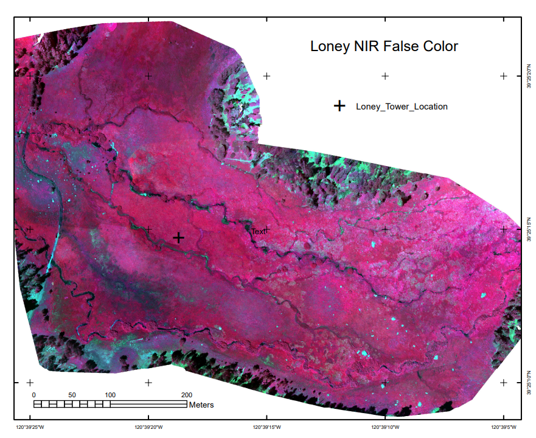
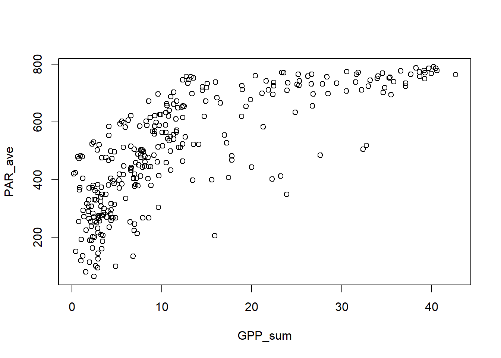
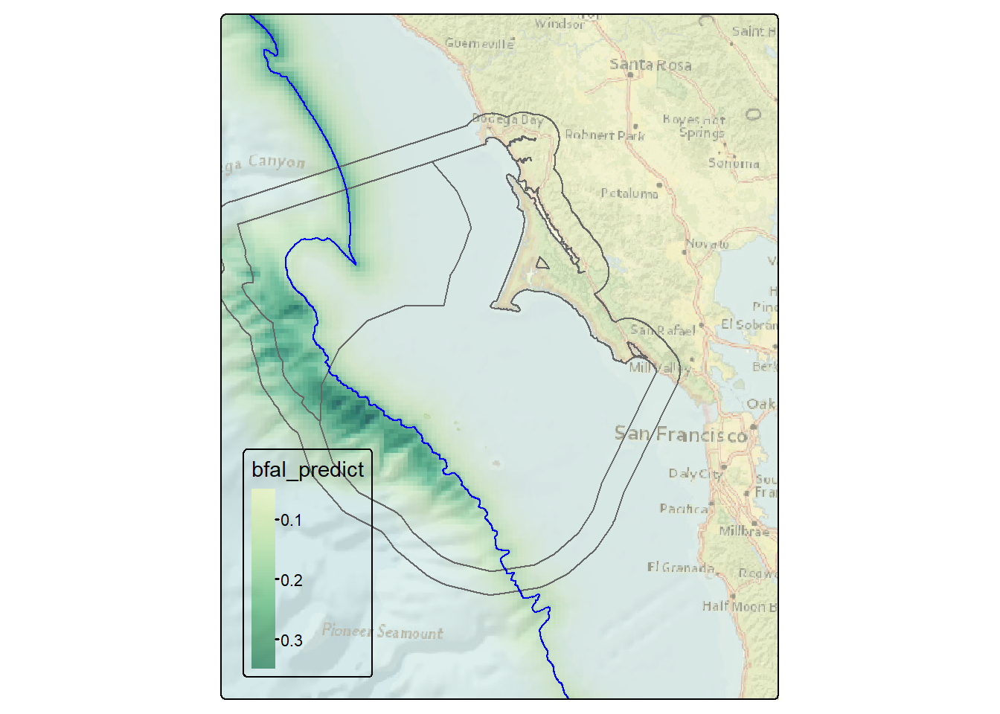
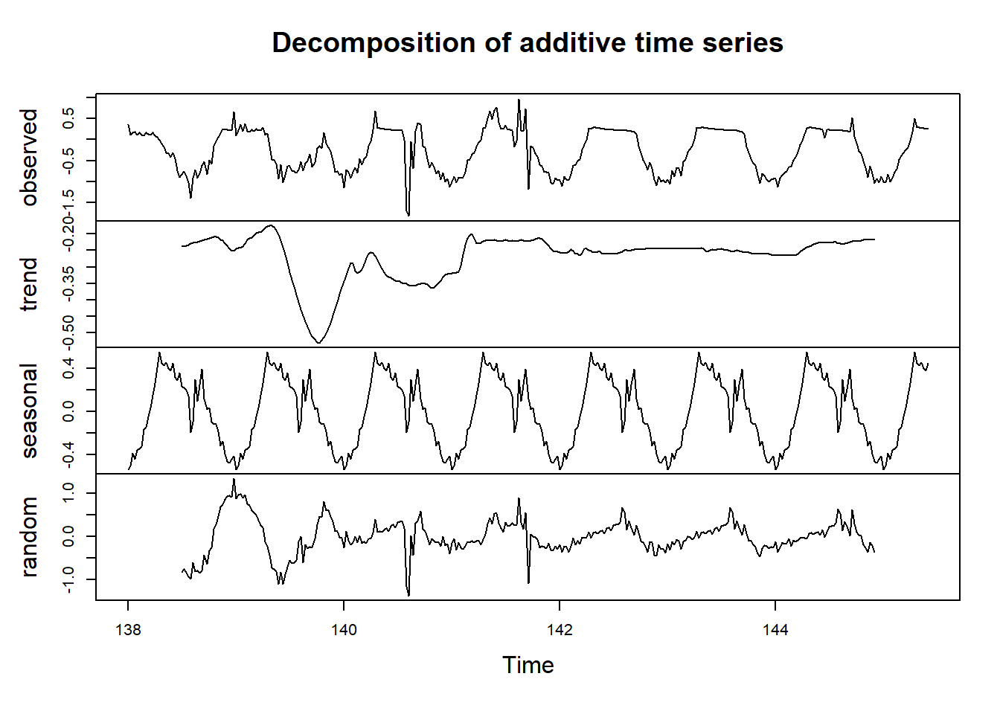
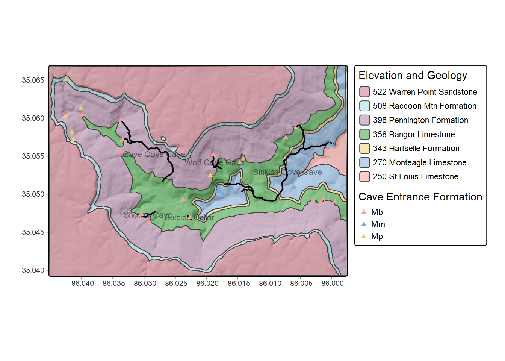

7 Time Series case studies
7.1 Loney Meadow flux data
At the beginning of this chapter, we looked at an example of a time series in flux tower measurements of northern Sierra meadows, such as in Loney Meadow where during the 2016 season a flux tower was used to capture CO2 flux and related micrometeorological data.
We also captured multispectral imagery using a drone, allowing for creating high-resolution (5-cm pixel) imagery of the meadow in false color (with NIR as red, red as green, green as blue), useful for showing healthy vegetation (as red) and water bodies (as black).

FIGURE 7.1: Loney Meadow False Color image from drone-mounted multispectral camera, 2017

FIGURE 7.2: Flux tower installed at Loney Meadow, 2016. Photo credit: Darren Blackburn
The flux tower data were collected at a high frequency for eddy covariance processing where 3D wind speed data are used to model the movement of atmospheric gases, including CO2 flux driven by photosynthesis and respiration processes. Note that the sign convention of CO2 flux is that positive flux is release to the atmosphere, which might happen when less photosynthesis is happening but respiration and other CO2 releases continue, while a negative flux might happen when more photosynthesis is capturing more CO2.
A spreadsheet of 30-minute summaries from 17 May to 6 September can be found in the igisci extdata folder as "meadows/LoneyMeadow_30minCO2fluxes_Geog604.xls", and includes data on photosynthetically active radiation (PAR), net radiation (Qnet), air temperature, relative humidity, soil temperature at 2 and 10 cm depth, wind direction, wind speed, rainfall, and soil volumetric water content (VWC). There’s clearly a lot more we can do with these data (see Blackburn, Oliphant, and Davis (2021)), but we’ll look at CO2 flux and PAR using some of the same methods we’ve just explored.
First we’ll test read in the data (I’d encourage you to also look at the spreadsheet in Excel [but don’t change it] to see how it’s organized) …
## # A tibble: 5,398 × 14
## `Decimal time` `Day of Year` `Hour of Day` `CO2 Flux` PAR Qnet Tair RH
## <dbl> <dbl> <dbl> <chr> <chr> <chr> <chr> <chr>
## 1 NA NA NA mgC m-2 s… mmol… W m-2 degC %
## 2 138 138 24 0.2011995… 0 -93.… 8.44… 62.9…
## 3 138. 138 0.5 0.1096287… 0 -95.… 8.12… 64.5…
## 4 138. 138 1 0.1650778… 0 -94.… 7.60… 66.9…
## 5 138. 138 1.5 0.1547810… 0 -96.… 7.57… 66.8…
## 6 138. 138 2 0.1783382… 0 -97.… 7.50… 67.1…
## 7 138. 138 2.5 0.1356721… 0 -99.… 7.61… 65.3…
## 8 138. 138 3 0.1512105… 0 -101… 7.73… 63.7…
## 9 138. 138 3.5 0.1698385… 0 -100… 7.48… 64.8…
## 10 138. 138 4 0.1340730… 0 -98.… 7.36… 65.4…
## # ℹ 5,388 more rows
## # ℹ 6 more variables: `Tsoil 2cm` <chr>, `Tsoil 10cm` <chr>, wdir <chr>,
## # wspd <chr>, Rain <chr>, VWC <chr>… and see that just as with the Bugac and Hungary data, it has half-hour readings and the second line of the file has measurement units. There are multiple ways of dealing with that, but this time we’ll capture the variable names then add them back after removing the first two rows:
library(igisci)
library(readxl); library(tidyverse); library(lubridate)
vnames <- read_xls(ex("meadows/LoneyMeadow_30minCO2fluxes_Geog604.xls"), n_max=0) %>%
names()
vunits <- read_xls(ex("meadows/LoneyMeadow_30minCO2fluxes_Geog604.xls"), n_max=0, skip=1) %>%
names()
Loney <- read_xls(ex("meadows/LoneyMeadow_30minCO2fluxes_Geog604.xls"), skip=2, col_names=vnames) %>%
rename(DecimalDay = `Decimal time`,
YDay = `Day of Year`,
Hour = `Hour of Day`,
CO2flux = `CO2 Flux`,
Tsoil2cm = `Tsoil 2cm`,
Tsoil10cm = `Tsoil 10cm`) %>%
mutate(datetime = as_date(DecimalDay, origin="2015-12-31"))The time unit we’ll want to use for time series is going to be days, and we can also then look at the data over time, and a group_by-summarize process by days will give us a generalized picture of changes over the collection period reflecting phenological changes from first exposure after snowmelt through the maximum growth period and through the major senescence period of late summer. We’ll look at a faceted graph from a pivot_long table.
LoneyDaily <- Loney %>%
group_by(YDay) %>%
summarize(CO2flux = mean(CO2flux),
PAR = mean(PAR),
Qnet = mean(Qnet),
Tair = mean(Tair),
RH = mean(RH),
Tsoil2cm = mean(Tsoil2cm),
Tsoil10cm = mean(Tsoil10cm),
wdir = mean(wdir),
wspd = mean(wspd),
Rain = mean(Rain),
VWC = mean(VWC))
LoneyDailyLong <- LoneyDaily %>%
pivot_longer(cols = CO2flux:VWC,
names_to="parameter",
values_to="value") %>%
filter(parameter %in% c("CO2flux", "Qnet", "Tair", "RH", "Tsoil10cm", "VWC"))
p <- ggplot(data = LoneyDailyLong, aes(x=YDay, y=value)) +
geom_line()
p + facet_grid(parameter ~ ., scales = "free_y")
FIGURE 7.3: Facet plot with free y scale of Loney flux tower parameters
Now we’ll build a time series for CO2 for an 8-day period over the summer solstice, using the start time and frequency (there’s also a time stamp, but this was easier, since I knew the data had no gaps):
LoneyCO2 <- Loney %>%
filter(YDay > 167 & YDay < 176) %>%
dplyr::select(CO2flux) %>%
ts(start=138,frequency=48)
plot(decompose(LoneyCO2))
FIGURE 7.4: Loney CO2 decomposition by day, 8-day period at summer solstice
Finally, we’ll create a couple ensemble average plots from all of the data, with sd error bars similar to what we did for Manaus, and with cowplot used again to compare two ensemble plots:
library(cowplot)
LoneyCO2sum <- Loney %>%
group_by(Hour) %>%
summarize(meanCO2 = mean(CO2flux), sdCO2 = sd(CO2flux))
LoneyPARsum <- Loney %>%
group_by(Hour) %>%
summarize(meanPAR = mean(PAR), sdPAR = sd(PAR))
p1 <- LoneyCO2sum %>% ggplot(aes(x=Hour)) + scale_x_continuous(breaks=seq(0,24,3)) +
geom_line(aes(y=meanCO2), col="blue") +
geom_errorbar(aes(ymax = meanCO2 + sdCO2, ymin = meanCO2 - sdCO2)) +
ggtitle("Loney ensemble CO2 flux")
p2 <- LoneyPARsum %>% ggplot(aes(x=Hour)) + scale_x_continuous(breaks=seq(0,24,3)) +
geom_line(aes(y=meanPAR), col="red") +
geom_errorbar(aes(ymax = meanPAR + sdPAR, ymin = meanPAR - sdPAR)) +
ggtitle("Loney ensemble PAR")
plot_grid(plotlist=list(p1,p2), ncol=1, align='v') # from cowplot
FIGURE 7.5: Loney meadow CO2 and PAR ensemble averages
We can explore the Loney meadow data further, maybe comparing multiple ensemble averages, relating variables (like the example here):
library(igisci)
library(readxl); library(tidyverse); library(lubridate)
vnames <- read_xls(ex("meadows/LoneyMeadow_30minCO2fluxes_Geog604.xls"), n_max=0) %>%
names()
vunits <- read_xls(ex("meadows/LoneyMeadow_30minCO2fluxes_Geog604.xls"), n_max=0, skip=1) %>%
names()
Loney <- read_xls(ex("meadows/LoneyMeadow_30minCO2fluxes_Geog604.xls"), skip=2, col_names=vnames) %>%
rename(DecimalDay = `Decimal time`,
YDay = `Day of Year`,
Hour = `Hour of Day`,
CO2flux = `CO2 Flux`,
Tsoil2cm = `Tsoil 2cm`,
Tsoil10cm = `Tsoil 10cm`) %>%
mutate(datetime = as_date(DecimalDay, origin="2015-12-31"))
ggplot(data=Loney) + geom_point(aes(x=Qnet, y=CO2flux, col=YDay), alpha=0.5) +
scale_color_gradient2(low="blue", high="red", mid="green", midpoint=200) 
FIGURE 7.6: Loney CO2 flux vs Qnet